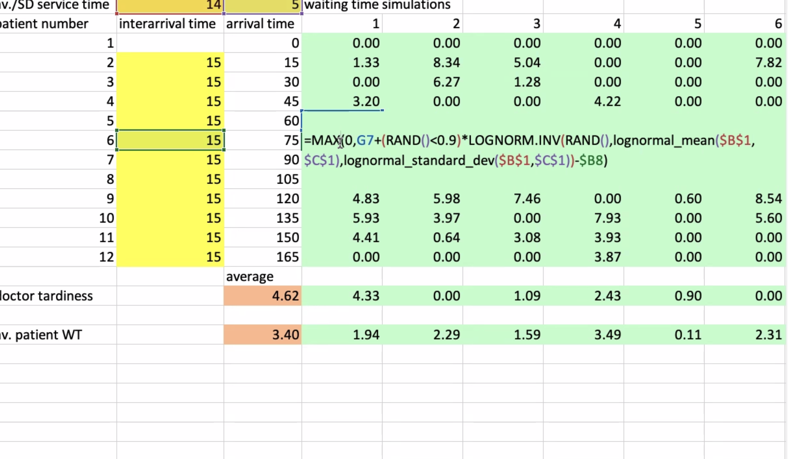
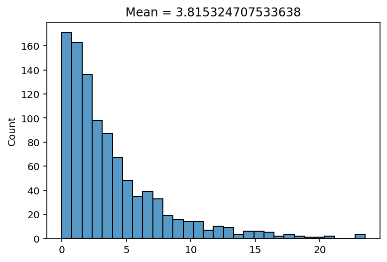
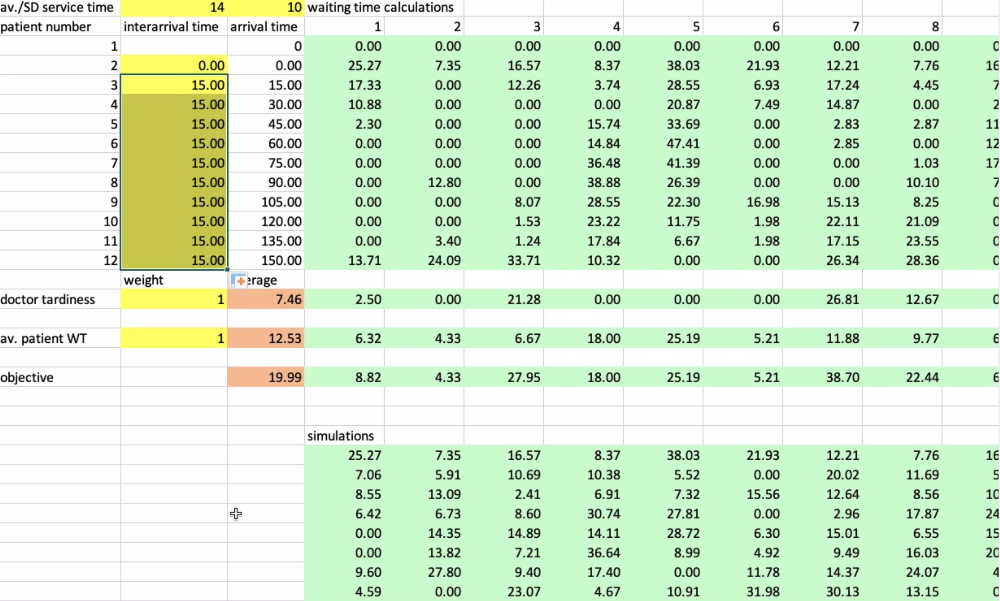
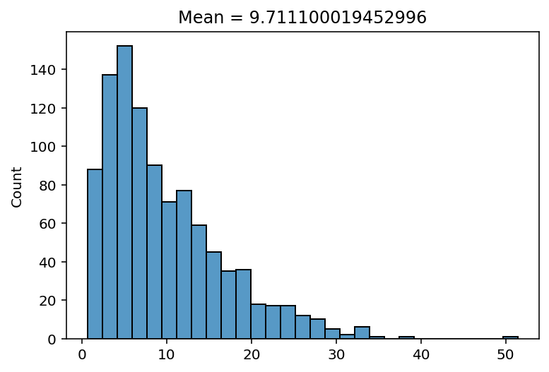
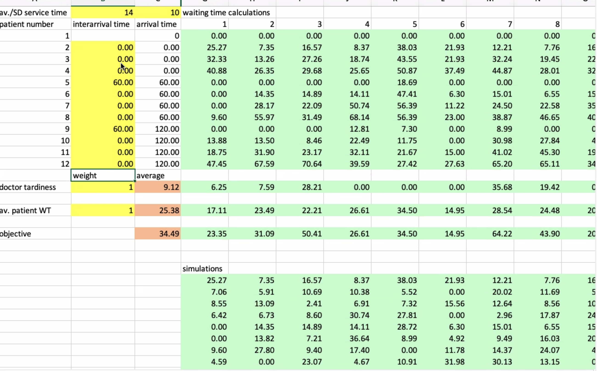
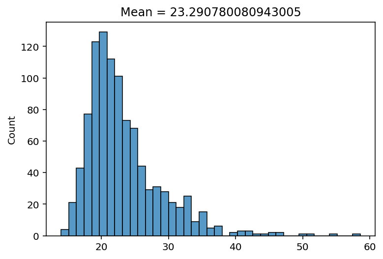

# Setup
## Libraries
import math
import numpy as np
from matplotlib import pyplot as plt
import seaborn as sns
## Functions
### Client generator
def generate_client(cts, sts, pct, ns=0):
ct = np.random.choice(cts, size = 1, p=pct)[0] # generate random client type
st = np.random.binomial(n=1, p=1-ns)*np.random.choice(sts, size = 1)[0] # generate random service time
return np.array([ct, st])
### Simulation
def simulate(iats, cts, sts, pct, ns, logs=False):
wt = 0
wts = []
for i in range(len(iats)):
if(i != 0): # don't calculate waiting time for first client in schedule
wt = max(0, tis - iats[i]) # calculate waiting time
ct, st = generate_client(cts, sts, pct, ns)
tis = wt + st # calculate time in system
wts.append(wt)
if(logs): print(iats[i], wt, st, tis, ct)
return(np.array(wts))
### Lognormal mean and sd
def logn_mean_sd(m, s):
sigma = np.sqrt(np.log(1 + (s/m)**2))
mu = np.log(m**2 / np.sqrt(m**2 + s**2))
return([mu, sigma])
## Variables
cts = np.array([0, 1]) # client types
pct = np.array([1, 0]) # distribution of client types - normal / emergency
# sts = np.array([14, 14, 14, 15, 16]) # service times
# sts = np.random.poisson(lam=14, size=1000)
sts = np.random.lognormal(mean = logn_mean_sd(14, 5)[0], sigma=logn_mean_sd(14, 5)[1], size=1000)
ns = 0.0
nSims = 1000 # number of simulations
logs = FalseScheduling Simulation
Setup
Run simulation 1

iats = np.array([0, 15, 15, 15, 15, 15, 15, 15, 15, 15, 15, 15]) # inter-arrival times
nSims = nSims # number of simulations
simRes = [] # array for saving simulation results
# run simulations
for s in range(nSims):
experiment = simulate(iats, cts, sts, pct, ns, logs=logs)
simRes.append(experiment.mean())
mwt = np.array(simRes).mean()Plot results
fig = sns.histplot(simRes)
fig.set(title=f"Mean = {mwt}")[Text(0.5, 1.0, 'Mean = 3.6752572324178647')]
Run simulation 2

iats = np.array([0, 0, 15, 15, 15, 15, 15, 15, 15, 15, 15, 15]) # inter-arrival times
nSims = nSims # number of simulations
simRes = [] # array for saving simulation results
# run simulations
for s in range(nSims):
experiment = simulate(iats, cts, sts, pct, ns, logs=logs)
simRes.append(experiment.mean())
mwt = np.array(simRes).mean()Plot results
fig = sns.histplot(simRes)
fig.set(title=f"Mean = {mwt}")[Text(0.5, 1.0, 'Mean = 9.711100019452996')]
Run simulation 3

iats = np.array([0, 0, 0, 0, 60, 0, 0, 0, 60, 0, 0, 0]) # inter-arrival times
nSims = nSims # number of simulations
simRes = [] # array for saving simulation results
# run simulations
for s in range(nSims):
experiment = simulate(iats, cts, sts, pct, ns, logs=logs)
simRes.append(experiment.mean())
mwt = np.array(simRes).mean()Plot results
fig = sns.histplot(simRes)
fig.set(title=f"Mean = {mwt}")[Text(0.5, 1.0, 'Mean = 22.2386215426208')]